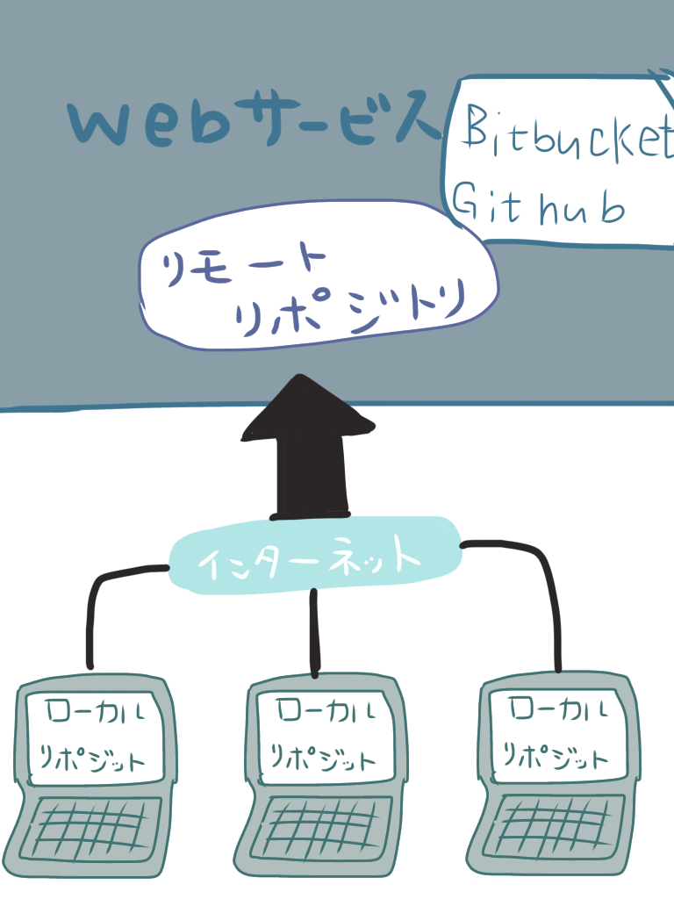

かわせみのページ
gitとhtmlについて
gitに関して
Gitとは 管理システムの一種
バージョン管理システムとは、ファイルに対して「誰が」「いつ」「何を変更したか」というような情報を記録することで、過去のある時点の状態を復元したり変更内容の差分を表示できるようにするシステム
Gitは企業やグループでコードの管理をする際に重要
Gitを含むバージョン管理システムは時系列でファイルの記録を整理でき、このような記録を管理するデータベースをリトポジと呼ぶ貯蔵庫のようなもの
自分の手作業だとバックアップをとるたびに名前をつけたり管理をすることが大変だが、とても細かい単位で記録を管理してくれるデータベースの機能を持っている
よっていつでも元に戻すことができる。

htmlについて
HTMLとは
HyperText Markup Language
ハイパーテキスト マークアップ ランゲージ
webサイトをつくるために世界中で使用されているコンピューター言語です文字にタグ（目印）をつけるためのマークアップ言語
HTMLの記述方法
「開始タグ」と「終了タグ」というものがあり(一部例外もあります)、この開始タグと終了タグの間にテキストなどを記述する事で構成していきます。
〈p〉テキスト〈p〉
要素の中に更に別の要素を入れることを「ネスト(入れ子)する」といいます。
ネストする際の注意点
要素をネストする際には絶対に守らなければならないルールがあります。
要素の開始タグと終了タグの順番を外側(開始タグ) → 内側(開始タグ) → コンテンツ → 内側(開始タグ) → 外側(開始タグ)のような形で構成する